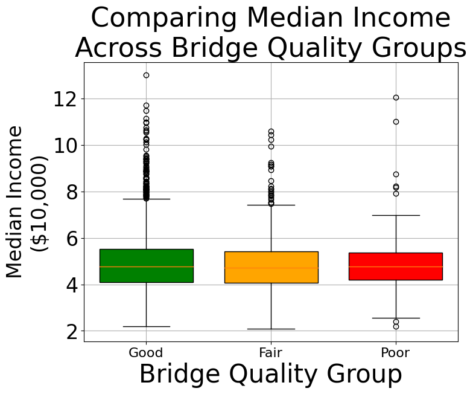

import pandas as pd
import numpy as np
import seaborn as sns
import matplotlib.pyplot as pltWhat Defines Areas with High and Low Quality Bridges?
Import
Read in data and extract relevant data
with open("../data/cleaned.csv", "r") as f:
df = pd.read_csv(f)
df.head()| County | GEOID | State | Latitude | Longitude | Location | Year | StateAbbv | Bridges_Bridge area (square meters) | Bridges_Bridge area, fair (square meters) | ... | Person trips_Trips 1-3 miles | Person trips_Trips 10-25 miles | Person trips_Trips 100-250 miles | Person trips_Trips 25-50 miles | Person trips_Trips 250-500 miles | Person trips_Trips 3-5 miles | Person trips_Trips 5-10 miles | Person trips_Trips 50-100 miles | Person trips_Trips greater than or equal to 500 miles | Person trips_Trips less than 1 mile | |
|---|---|---|---|---|---|---|---|---|---|---|---|---|---|---|---|---|---|---|---|---|---|
| 0 | Abbeville County | 45001 | South Carolina | 34.222593 | -82.459165 | POINT (-82.459165 34.222593) | 2014 | SC | NaN | NaN | ... | NaN | NaN | NaN | NaN | NaN | NaN | NaN | NaN | NaN | NaN |
| 1 | Abbeville County | 45001 | South Carolina | 34.222593 | -82.459165 | POINT (-82.459165 34.222593) | 2015 | SC | NaN | NaN | ... | NaN | NaN | NaN | NaN | NaN | NaN | NaN | NaN | NaN | NaN |
| 2 | Abbeville County | 45001 | South Carolina | 34.222593 | -82.459165 | POINT (-82.459165 34.222593) | 2016 | SC | NaN | NaN | ... | NaN | NaN | NaN | NaN | NaN | NaN | NaN | NaN | NaN | NaN |
| 3 | Abbeville County | 45001 | South Carolina | 34.222593 | -82.459165 | POINT (-82.459165 34.222593) | 2017 | SC | 64177.63 | 22864.17 | ... | NaN | NaN | NaN | NaN | NaN | NaN | NaN | NaN | NaN | NaN |
| 4 | Abbeville County | 45001 | South Carolina | 34.222593 | -82.459165 | POINT (-82.459165 34.222593) | 2018 | SC | 73924.01 | 34151.20 | ... | NaN | NaN | NaN | NaN | NaN | NaN | NaN | NaN | NaN | NaN |
5 rows × 40 columns
Determine the percentage of bridges in each county that are poor, averaged over time
bridgeBin = df[["County","State","Year"] + [c for c in df.columns if "Bridges_" in c]].copy()
bridgeBin.dropna(subset=["Year"]+[c for c in bridgeBin.columns if "Bridges_" in c], inplace=True)
bridgeBin["Bridges_PctPoor"] = 100*bridgeBin["Bridges_Bridges, poor"] / bridgeBin["Bridges_Total bridges"]
bridgeBin = bridgeBin[["County","State","Bridges_PctPoor"]]
bridgeBin = bridgeBin.groupby(["County","State"], as_index = False).mean().reset_index(drop = True)
plt.hist(bridgeBin["Bridges_PctPoor"], bins = 50)
plt.show()
Bin the percent-poor bridge data
bins = [0, 10, 20, 100]
labels = ['Good', 'Fair', 'Poor']
bridgeBin["BridgeQuality"] = pd.cut(bridgeBin["Bridges_PctPoor"], bins=bins, labels=labels, right=False)Clean up indicator data for analysis, aggregating across years as well
dfInd = df.drop(columns = ["GEOID","Latitude","Longitude"]+[c for c in df.columns if "Bridges_" in c])
dfInd = dfInd[["County","State","Location"] +
[c for c in dfInd.columns if "Business_" in c or
"Person trips_" in c or
c in ['Commuting_Commute by car/ truck/van',
'Commuting_Commute by public transportation',
"Demographics_Median Household Income",
"Demographics_Population"]]]
dfInd = dfInd.groupby(["County","State","Location"], as_index = False).mean().reset_index(drop = True)
dfInd["TotalCommute"] = dfInd["Commuting_Commute by car/ truck/van"] + dfInd["Commuting_Commute by public transportation"]
dfInd["TotalTrips_sub100"] = dfInd[[c for c in dfInd.columns if "Person trips_" in c and
any(lab in c for lab in ["1-3","10-25",'25-50',"3-5","5-10","50-100","1 mile"])]].sum(axis = 1)
dfInd["TotalTrips_over100"] = dfInd["Person trips_Total trips"] - dfInd["TotalTrips_sub100"]
dfInd.drop(columns = [c for c in dfInd.columns if c != "Person trips_Total trips" and "Person trips_" in c], inplace = True)
dfInd["Commute_pctPersonal"] = 100*dfInd["Commuting_Commute by car/ truck/van"]/dfInd["TotalCommute"]
dfInd["Commute_pctPublic"] = 100 - dfInd["Commute_pctPersonal"]
dfInd.drop(columns = ["Commuting_Commute by car/ truck/van","Commuting_Commute by public transportation","TotalCommute"], inplace = True)
dfInd["Trips_pctOver100"] = 100*dfInd["TotalTrips_over100"]/dfInd["Person trips_Total trips"]
dfInd["Trips_pctSub100"] = 100 - dfInd["Trips_pctOver100"]
dfInd["Trips_perCap"] = dfInd["Person trips_Total trips"] / dfInd["Demographics_Population"]
dfInd.drop(columns = ["Person trips_Total trips","TotalTrips_sub100","TotalTrips_over100"], inplace = True)
dfInd["Business_EmpPer100"] = 100 * dfInd["Business_Employees"] / dfInd["Demographics_Population"]
dfInd["Business_EstabPerCap"] = dfInd["Business_Establishments"] / dfInd["Demographics_Population"]
dfInd.drop(columns = ["Business_Employees","Business_Establishments"], inplace = True)
dfInd.rename(columns = {
"Demographics_Median Household Income":"medianIncome",
"Demographics_Population":"population"
}, inplace = True)
dfInd.head()| County | State | Location | medianIncome | population | Commute_pctPersonal | Commute_pctPublic | Trips_pctOver100 | Trips_pctSub100 | Trips_perCap | Business_EmpPer100 | Business_EstabPerCap | |
|---|---|---|---|---|---|---|---|---|---|---|---|---|
| 0 | Abbeville County | South Carolina | POINT (-82.459165 34.222593) | 35923.333333 | 24804.0 | 99.561047 | 0.438953 | 0.647084 | 99.352916 | 1282.925496 | 17.972908 | 0.013490 |
| 1 | Acadia County | Louisiana | POINT (-92.411984 30.290536) | 40039.166667 | 62433.4 | 99.838331 | 0.161669 | 1.124911 | 98.875089 | 1349.207395 | 20.221868 | 0.017891 |
| 2 | Accomack County | Virginia | POINT (-75.630317 37.763428) | 41474.500000 | 32886.0 | 99.247500 | 0.752500 | 0.558691 | 99.441309 | 1585.370081 | 26.077358 | 0.022399 |
| 3 | Ada County | Idaho | POINT (-116.241161 43.451092) | 59973.500000 | 436263.4 | 99.497736 | 0.502264 | 0.931199 | 99.068801 | 1293.563586 | 44.416515 | 0.030492 |
| 4 | Adair County | Iowa | POINT (-94.470966 41.33074) | 49542.333333 | 7231.4 | 99.582361 | 0.417639 | 1.945013 | 98.054987 | 1299.273446 | 25.259286 | 0.026717 |
Merge the binned bridge qualities
df = pd.merge(left = bridgeBin.drop(columns = "Bridges_PctPoor"), right = dfInd.drop(columns = "Location"), on = ["County","State"], how = "inner")
df.head()| County | State | BridgeQuality | medianIncome | population | Commute_pctPersonal | Commute_pctPublic | Trips_pctOver100 | Trips_pctSub100 | Trips_perCap | Business_EmpPer100 | Business_EstabPerCap | |
|---|---|---|---|---|---|---|---|---|---|---|---|---|
| 0 | Abbeville County | South Carolina | Good | 35923.333333 | 24804.0 | 99.561047 | 0.438953 | 0.647084 | 99.352916 | 1282.925496 | 17.972908 | 0.013490 |
| 1 | Acadia County | Louisiana | Good | 40039.166667 | 62433.4 | 99.838331 | 0.161669 | 1.124911 | 98.875089 | 1349.207395 | 20.221868 | 0.017891 |
| 2 | Accomack County | Virginia | Fair | 41474.500000 | 32886.0 | 99.247500 | 0.752500 | 0.558691 | 99.441309 | 1585.370081 | 26.077358 | 0.022399 |
| 3 | Ada County | Idaho | Good | 59973.500000 | 436263.4 | 99.497736 | 0.502264 | 0.931199 | 99.068801 | 1293.563586 | 44.416515 | 0.030492 |
| 4 | Adair County | Iowa | Fair | 49542.333333 | 7231.4 | 99.582361 | 0.417639 | 1.945013 | 98.054987 | 1299.273446 | 25.259286 | 0.026717 |
Median Income and Commute Numbers
colors = {
"Good":"green",
"Fair":"orange",
"Poor":"red"
}
for cat, color in colors.items():
plotDf = df[df["BridgeQuality"] == cat]
plt.scatter(plotDf["Business_EmpPer100"], plotDf["medianIncome"],
color = color, label = cat, s = 16, alpha = 0.75)
plt.title("Trips Per Capita vs. Median Income", fontsize = 24)
plt.xlabel("Employees Per 100 Residents", fontsize = 16)
plt.ylabel("Median Income", fontsize = 16)
plt.legend(fontsize = 16)
plt.show()Income Versus Bridge Quality
plt.figure(figsize=(8, 6))
boxplot = plt.boxplot([df[df['BridgeQuality'] == cat]['medianIncome']/10000 for cat in df['BridgeQuality'].unique()],
labels=df['BridgeQuality'].unique(),
patch_artist=True,
widths=0.75)
for box, cat in zip(boxplot['boxes'], df['BridgeQuality'].unique()):
box.set(facecolor=colors[cat])
plt.title("Comparing Median Income\nAcross Bridge Quality Groups", fontsize = 32)
plt.xlabel('Bridge Quality Group', fontsize = 30)
plt.ylabel('Median Income\n($10,000)', fontsize = 24)
plt.xticks(fontsize=16)
plt.yticks(fontsize=24)
plt.grid(True)
plt.show()
businessDf = df[["BridgeQuality","Business_EstabPerCap"]].copy()
businessDf["Business_EstabPerCap"] = 1000 * businessDf["Business_EstabPerCap"]
businessDf.rename(columns = {"Business_EstabPerCap":"BusinessPer1000"}, inplace = True)
bins = [0,15,30,45,businessDf["BusinessPer1000"].max()]
businessLabs = ['0-15', '15-30', '30-45', "45+"]
businessDf["BusinessPer1000"] = pd.cut(businessDf["BusinessPer1000"], bins=bins, labels=businessLabs, right=False)
businessDf['Size'] = 1
businessDf = businessDf.groupby(["BridgeQuality","BusinessPer1000"], as_index = False).sum()
for x, q_lab in enumerate(labels):
total = businessDf[businessDf["BridgeQuality"] == q_lab]["Size"].sum()
for y, b_lab in enumerate(businessLabs):
size = businessDf[(businessDf["BridgeQuality"] == q_lab) & (businessDf["BusinessPer1000"] == b_lab)]["Size"].iloc[0]
plt.scatter(x, y, s = 10000*size/total, color = colors[q_lab])
plt.annotate(f"{round(100*size/total, 2)}%", (x, y), fontsize=16, ha='center', va='center')
plt.xlim((-0.5,2.5))
plt.xticks(businessDf["BridgeQuality"].map({k:i for i,k in enumerate(labels)}),businessDf["BridgeQuality"], fontsize = 14)
plt.ylim((-0.5,3.5))
plt.yticks(businessDf["BusinessPer1000"].map({k:i for i,k in enumerate(businessLabs)}),businessDf["BusinessPer1000"], fontsize = 14)
plt.xlabel("Bridge Quality Group", fontsize = 20)
plt.ylabel("Business Establishments\nPer 1,000 People", fontsize = 20)
plt.title("Businesses Per 1000 People, Across Counties,\nSplit Into Bridge Quality Groups", fontsize = 24)
plt.show()plt.figure(figsize=(8, 6))
sns.violinplot(x='BridgeQuality', y='Commute_pctPublic', data=df)
plt.title('Distribution of Percent of Total Commutes\nUsing Public Transportation For Bridge Qualities')
plt.xlabel('Bridge Quality')
plt.ylabel('Percent of Total Commutes Using Public Transportation')
plt.show()plt.figure(figsize=(8, 6))
sns.violinplot(x='BridgeQuality', y='Trips_pctOver100', data=df)
plt.title('Distribution of Percent of Total Trips\nOver 100 Miles For Bridge Qualities')
plt.xlabel('Bridge Quality')
plt.ylabel('Percent of Total Trips Over 100 Miles')
plt.show()